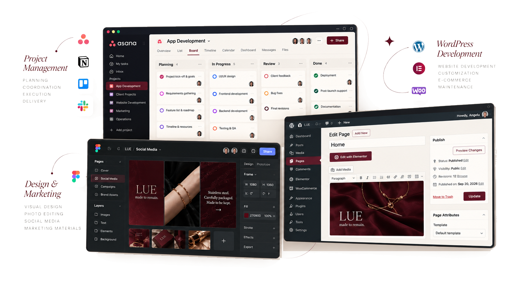
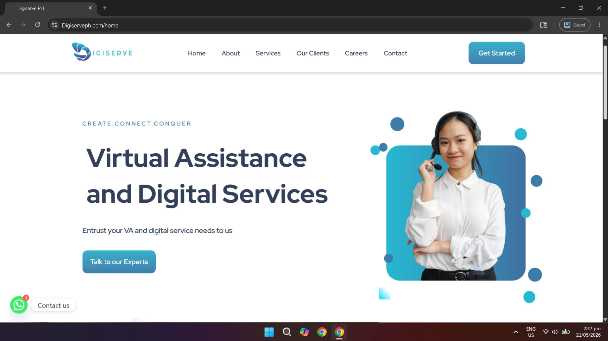
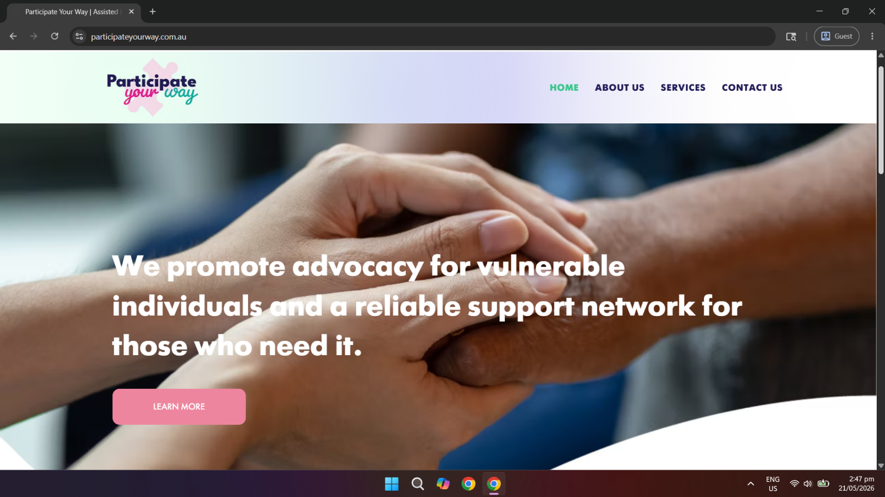
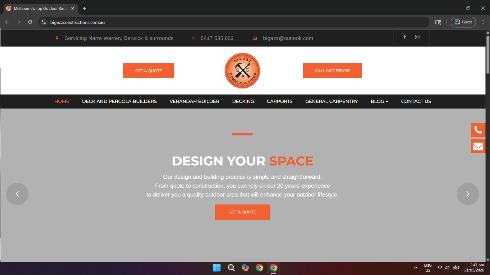
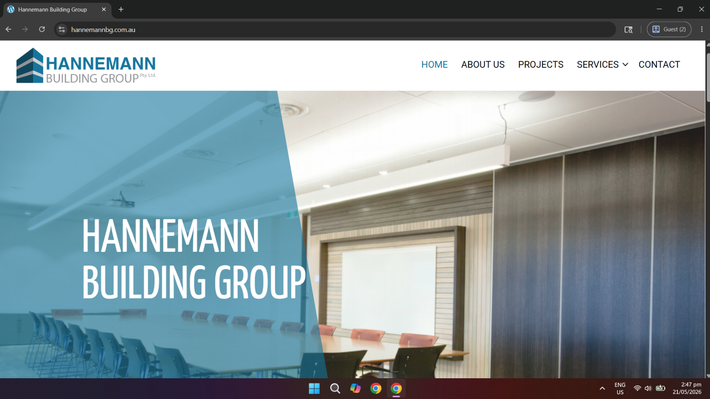
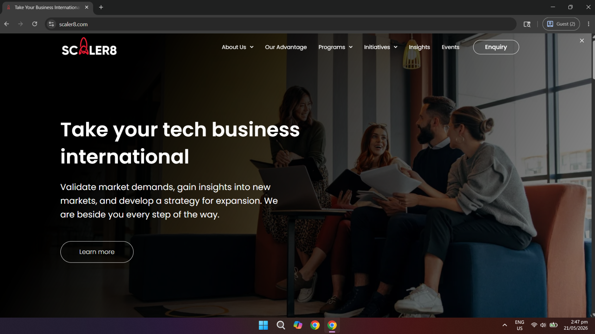
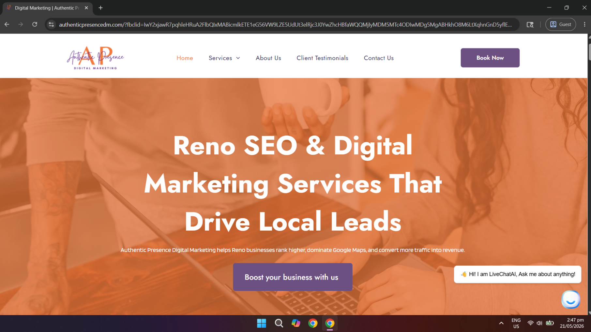
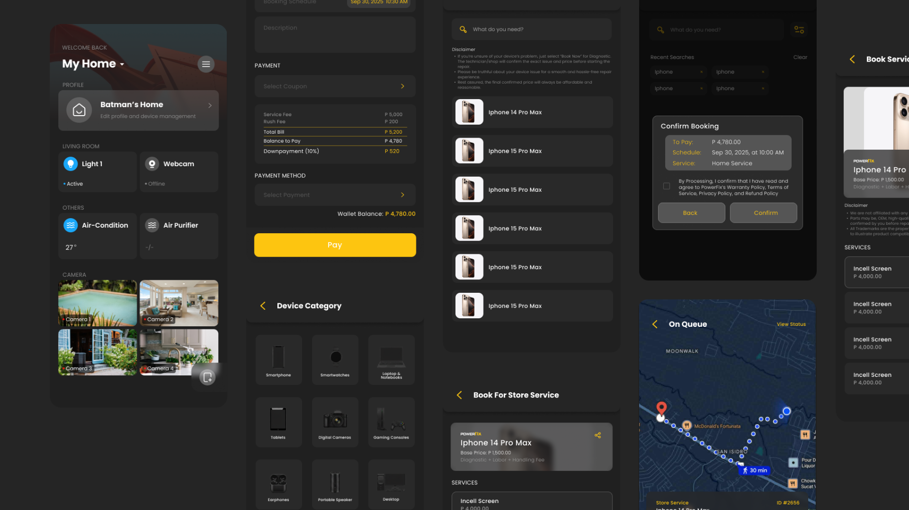
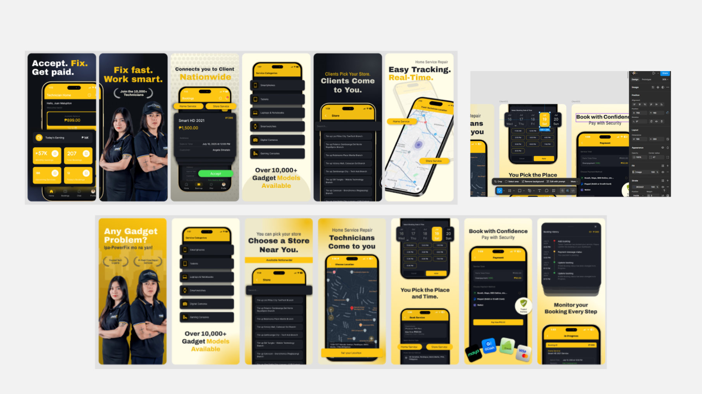
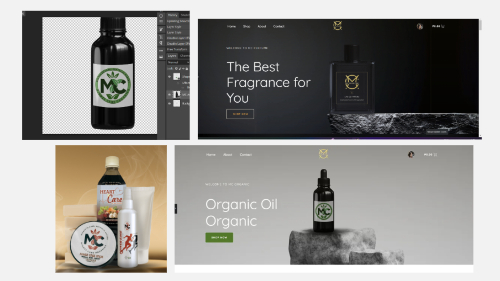

Project Management
Project coordination, workflow planning, documentation, stakeholder communication, team collaboration, and quality assurance.
PROJECT MANAGEMENT · WORDPRESS · DIGITAL MARKETING
I coordinate digital projects, build and maintain WordPress websites, and support brands with practical creative and marketing work.
SCROLL TO EXPLORE ↓
01
I'm Angelu, an IT professional specializing in project coordination, WordPress websites, and digital operations. I work with clients and cross-functional teams to turn requirements into organized, practical deliverables.
My experience spans agency website projects, e-commerce platforms, and software development coordination. I work independently and collaborate with clients, designers, developers, and other stakeholders when a project calls for it.
Explore my experience ↗02
Focused services, supported by experience in digital operations and client coordination.
Project coordination, workflow planning, documentation, stakeholder communication, team collaboration, and quality assurance.
WordPress and Elementor websites, WooCommerce, updates, maintenance, content management, and basic SEO.
Content management, copywriting, social media support, Canva graphics, banners, and digital marketing materials.
03
Tools and platforms I've used across website delivery, content, and project coordination.
04
Real website work, from full builds and redesigns to maintenance and content support.

Built a six-page agency website with service pages, inquiry forms, responsive layouts, and basic on-page SEO.

Redesigned an advocacy organization’s website to improve clarity, visual hierarchy, and usability.

Handled content updates, plugin management, bug fixes, and smaller layout improvements.

Provided ongoing layout refinements, usability improvements, and structural updates.

Managed blog publishing, image optimization, and page updates while maintaining visual consistency.

Worked on a website revamp involving page structure, copy, search optimization, and user experience.
05
Selected interface concepts, creative assets, WordPress e-commerce work, and project coordination.

Created a Figma UI/UX concept exploring cleaner screens and booking flows. This concept was not published or developed.
View prototype ↗
Designed promotional screenshots and messaging to communicate the app's booking and technician features.
View app listing ↗
WORDPRESS · E-COMMERCE · CREATIVE PRODUCTION
Built a single WordPress e-commerce website for two sister brands, MC Perfume and MC Organic, using distinct visual designs for each brand within one domain.
Alongside website development, I edited product imagery for marketing and model presentations using Photoshop and Canva. I also integrated the website with the client's existing CRM platform, working through compatibility limitations to connect the systems.
PROJECT MANAGEMENT CASE STUDY
At PowerFix, I coordinated requirements, development priorities, sprint activities, quality checks, documentation, and communication between technical and non-technical stakeholders.
My role was project coordination and product support, not coding the application.
06
A straightforward way of keeping development and delivery organized.
Clarify goals, requirements, and constraints.
Define priorities, structure, and responsibilities.
Develop or coordinate work, test, and refine.
Launch, document, and support handover.
07
Selected roles from my professional CV.
PowerFix Gadget Repair
Coordinated software delivery for a web platform and mobile application, working across requirements, priorities, QA, documentation, and stakeholder communication.
Amiga Café
Managed day-to-day operations, staff coordination, inventory, supplier communication, and digital presence.
SpinDiv Kinetics
Developed and maintained WordPress sites, supported Shopify and WooCommerce projects, coordinated revisions, and managed digital content.
BS Information Technology · Camarines Norte State College · 2020–2025 · Academic Distinction Awardee
ICT — Computer Programming · Asian College of Science and Technology of Quezon City · 2019–2020
08
Need help coordinating a digital project, maintaining a WordPress website, or preparing creative materials? Get in touch.
Compose in Gmail ↗If you do not use Gmail, copy my email address: